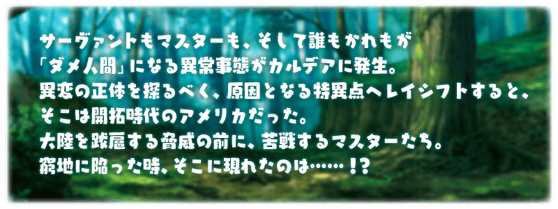
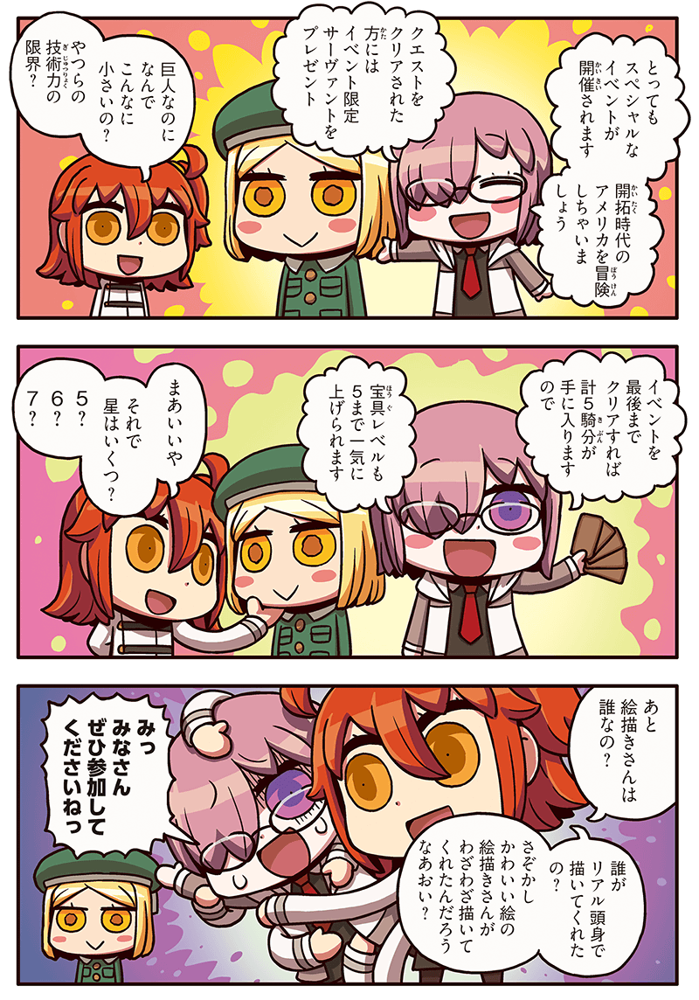
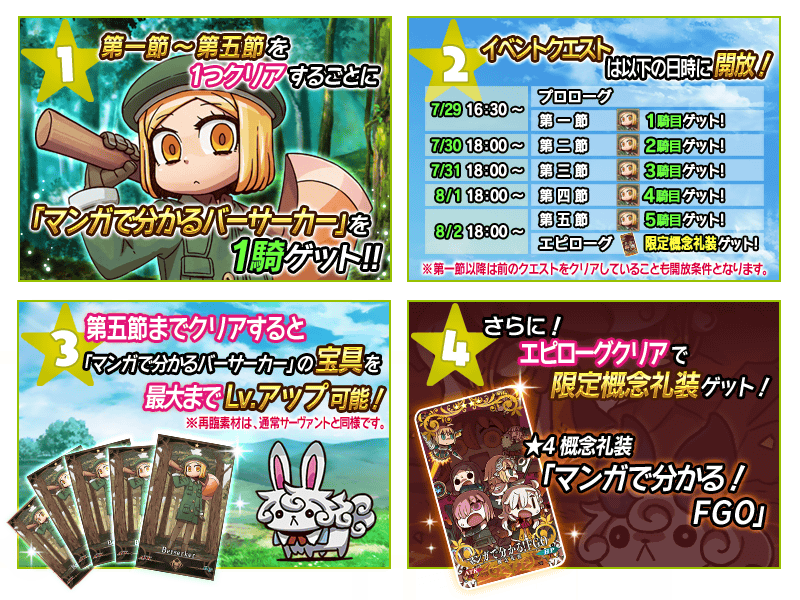

◆活動舉辦期間◆
2018年7月29日(日) 15:30～8月12日(日) 11:59
◆活動概要◆
舉辦期間限定活動「復刻:All the Statesman! ～靠漫畫了解合衆國開拓史～」！
通過逐日開放的期間限定活動關卡，得到期間限定Servant「★1(C)靠漫畫了解Berserker」吧！
並且！通過全部活動關卡的話，可以取得限定概念禮裝「★4(SR)マンガで分かる！FGO」！
※本活動為復刻2017年舉辦期間限定活動「All the Statesman! ～靠漫畫了解合衆國開拓史～」的「復刻活動」。
◆活動參加條件◆
只限通過「特異點F 炎上汙染都市 冬木」的Master才能參加
本活動第二節以後的活動關卡將逐日開放。
活動關卡的進行條件為通過前1個的活動關卡。
※要開始第一節的條件為通過序幕。

◆活動關卡開放時間表◆
| 開放時間 | 關卡 |
|---|---|
| 7月29日(日) 15:30～ | ・序幕 開放 ・第一節 開放 |
| 7月30日(一) 17:00～ | ・第二節 開放 |
| 7月31日(二) 17:00～ | ・第三節 開放 |
| 8月1日(三) 17:00～ | ・第四節 開放 |
| 8月2日(四) 17:00～ | ・第五節 開放 ・後記 開放 |
※活動關卡含序幕與後記全7個。
請注意後記結束後，活動看板還是會留在管理室(ターミナル)畫面，但不會追加之後的關卡。
※已持有限定概念禮裝，在通過後記可再度獲得限定概念禮裝。
◆「All the Statesman! ～靠漫畫了解合衆國開拓史～」限定概念禮裝◆
|
★★★★SR |
介紹靠漫畫了解Berserker的寶具演出！
在「Fate/Grand Order」官方網站內的公告中，公開了「★1(C)靠漫畫了解Berserker」的寶具演出。敬請確認。
其他還有，期間限定宣傳活動「Fate/Grand Order Fes. 2018 ～3rd Anniversary～」舉辦中！
關於詳情請自下述橫幅確認。